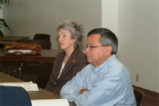
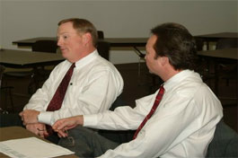

A conversation with future neighbors.
January 2004 · Las Villas De Magnolia
AAMA-CDC hosted a public meeting over coffee to discuss plans for a proposed 116-unit senior housing development at Harrisburg and 72nd Streets.


January 2004 · Las Villas De Magnolia
AAMA-CDC hosted a public meeting over coffee to discuss plans for a proposed 116-unit senior housing development at Harrisburg and 72nd Streets.

